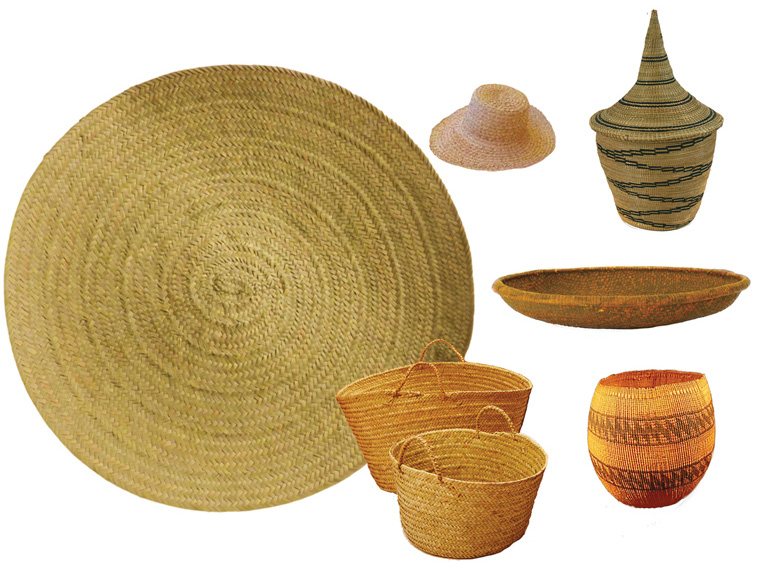

Pottery
Pottery is an art of making pots and other items from clayey soils. This skill was common in areas with suitable clayey soil. In pre-colonial Africa, people who specialised in pottery made items such as pots, pipes, and bowls for domestic use and exchange. Pottery was common among the Pare of North-Eastern Tanzania, the Kerewe of the Ukerewe Island in Lake Victoria, and the Kisi on the shores of Lake Nyasa. It was also common in the Nok area in Northern Nigeria.
Uses of pottery
Pottery was useful for making objects for cooking and storing water, beer, milk, and grains. Pottery objects also became important commodities in both local and regional trade. For example, Pare potters traded their objects with neighbouring societies such as the Chagga, Taveta and the Maasai. Kisi potters traded their objects with the Nyakyusa, Ndali, Kinga, Pangwa, Ngoni, and other neighbouring societies. The Lozi of Zambia traded pots among themselves and with their neighbours, the Lunda and Bisa.
Basketry
Basketry is the art of weaving palm leaves and other special reeds to make items like fish traps, mats, hats, baskets and ropes. Basketry was practised by many societies in pre-colonial Africa including the Nyamwezi, Gogo, Zaramo, Yao and Ganda. Basketry was also common among the Chokwe, Lozi, and Tonga of Zambia, Buga of Guinea and Liberia. Others included Sara of Chad, Zulu of South Africa, Barotse and Twana of Botswana and Bamileke of Cameroon. The materials used in basketry were mostly obtained from palm trees, reeds, bamboos and various types of grass that were found in many places. Figure 5.2 shows basketry products in pre-colonial Africa.
